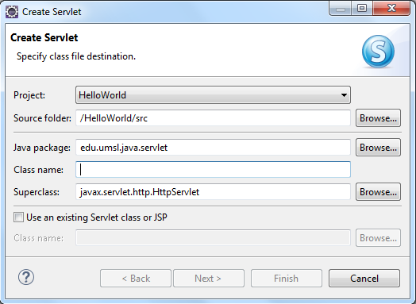

Tutorial 3. First Java Web Application: HelloWorld
by Dr. Wenjie He
Overview
This is our first example as a Java web application. In this example, we will learn the basic structure
of a Java web application. We will use the
Eclipse for Java EE to build this project, which contains
a Java servlet and a simple HTML file as the welcome page.
Goal: Help beginners to get familiar with the Eclipse development environment.
Using Eclipse for Java EE to Develop Web Application
We will create two source files during our work. But the resulting source files are also provided (in the ZIP file)
for reference purpose.
- Start Eclipse for Java EE.
Next we create a Dynamic Web Project.
- In the Eclipse IDE, do the following steps:
File ⇒ New ⇒ Dynamic Web Project ⇒
- Type the project name: HelloWorld and make sure that Tomcat is selected as your Target Runtime.
Then click the Next button.
 Accept the default setting and click the Next button.
Accept the default setting and click the Next button.
- Generate the Deployment Description file for later configuration.
In the current window, by default, the Deployment Description checkbox is not selected. We need this file
to configure our welcome file. Check the checkbox.
Click the Finish button.
- A Dynamic Web Project is created in the Eclipse.
Expand the Java Resources node, the src node will hold all our Java source files.
Expand the WebContent node. This node will contain all our web resource files.
- Create the servlet: HelloServlet.java
Create a Java package to hold the servlet first.
Right-click the src node ⇒ New ⇒ Package ⇒
Type the package name: edu.umsl.java.servlet in the Name field.
Click the Finish button, and the package is created.
Now we can create the servlet in this package.
Right-click the edu.umsl.java.servlet node ⇒ New ⇒ Servlet ⇒

Type the servlet name HelloServlet in the Class name field.
Click the Next button.
In this window, we have a chance to change the url-pattern of the servlet. The URL pattern of a servlet
is a logical name of the servlet, which we will use to access the servlet. In this tutorial, we have no reason to
change the default url-pattern (in the red circle), thus we click the Next button.
In this window, we have a chance to select appropriate methods for this servlet. We just click the Finish
button to generate the servlet class.
- Overwrite the doGet method to implement the business logic
Comment out Line 30 and add the following lines in the doGet method:
response.setContentType("text/html");
PrintWriter out = response.getWriter();
out.println("Hello World!");
out.flush();
out.close();
You will see a red-cross sign at the line that contains the class PrintWriter. This means that the
package that contains this class has not been imported.
To import the package, click the red-cross sign, a window pops up. When you see the line that contains
java.io, hit the Enter button. The package will be imported, and the red-cross sign will be gone.
You will see the servlet class as follows,
The main code is in the circle.
- Create a welcome file: index.html
Now the servlet is done. But how do we call the servlet? We will create a simple HTML file called index.html,
in which we put a hyperlink that connects the servlet through its URL pattern.
Note that the node WebContent is the root node of our web application, we will put index.html under
this node directly. To do that,
Right-click the WebContent node ⇒ New ⇒ HTML file ⇒
Enter the filename index.html in the File name field, then click the Finish button.
The file is created in the Editor Pane.
Now we make some changes. First we change the title to Hello World. Then we add a hyperlink in the
<body> element as follows,
<a href="HelloServlet">Hello World</a>
If you want to format the file, you can do the following steps:
Right-click anywhere in the file ⇒ Source ⇒ Format ⇒
Q: Since the URL pattern for the servlet is /HelloServlet (note the slash), why when we use it as the
value of the href attribute, the slash is gone?
- View the deployment descriptor: web.xml
Expand the WEB-INF node, you will see the node web.xml.
You can view the content of web.xml by double-clicking it, and then click the Source tab if
it is under the Design tab.
The welcome file index.html is in the list. So this file will be called when the web application gets
started.
- Now we can start the project:
Rifgt-click the HelloWorld node ⇒ Run As ⇒ Run on Server ⇒
If this is the first time you use this Eclipse, you can click Finish directly, because you do not have any other
projects in this Eclipse. If you already have some projects in the Eclipse, you click the Next button,
and click the Remove All button to only leave the current project in the right column. Then click the
Finish button. If a window pops up to ask you for permission, you click the Allow Access button.
You will see the first page of the project displayed in the internal web browser of Eclipse:
Click the hyperlink, you will see
Explanation of the code will be given in another tutorial.
==========The End==========